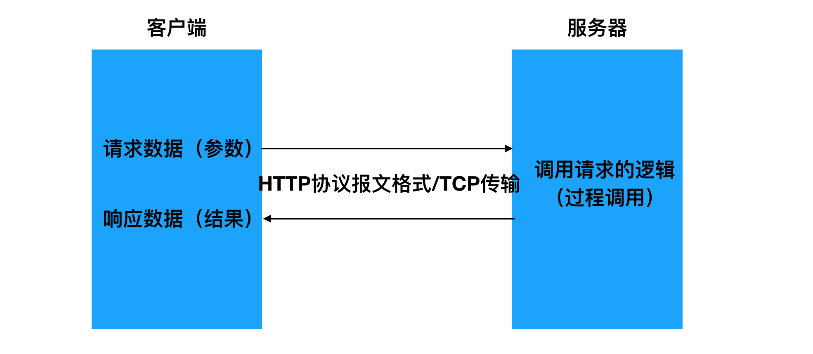
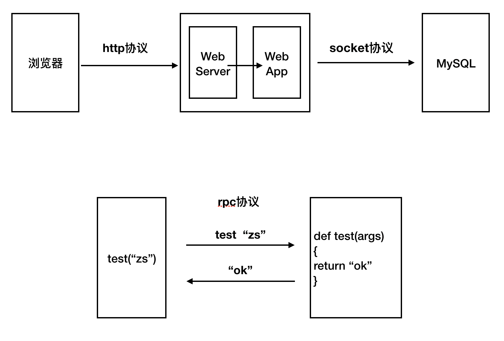

RPC简介
[TOC]
本章节需要了解关于RPC的知识点
- 概念: RPC (远程过程调用) 是一个计算机通信协议
- A向B发送func_name，args
- B执行func_name获取结果
- B向A返回结果
- 作用: 可以以
函数形式来调用另一台计算机上的程序- 优点: 使用自定义的二进制形式进行数据传输, 效率极高
- 应用场景:
子系统之间进行数据交互- 解决方案
- google公司的
gRPC- facebook公司的
thrift
1. 什么是RPC
远程过程调用（英语：Remote Procedure Call，缩写为 RPC，也叫远程程序调用）是一个计算机通信协议。该协议允许运行于一台计算机的程序调用另一台计算机的子程序，而程序员无需额外地为这个交互作用编程。如果涉及的软件采用面向对象编程，那么远程过程调用亦可称作远程调用或远程方法调用。

2. 背景与用途
在单台计算机中，我们可以通过程序调用来传递控制信号和数据；或者说通过程序调用，我们可以将多个程序组成一个整体来实现某个功能。
如果将这种调用机制推广到多台彼此间可以进行网络通讯的计算机，由多台计算机中的多个程序组成一个整体来实现某个功能，这也是可以的。调用的一方（发起远程过程调用，然后调用这方的环境挂起，参数通过网络传递给被调用方，被调用的一方执行程序，当程序执行完成后，产生的结果再通过网络回传给调用的一方，调用的一方恢复继续执行。这样一种原型思想，就是我们所说的RPC远程过程调用。
RPC这种思想最早可以追溯到1976年，RPC的发展到今天已经40年有余了。
如今的计算机应用中，单机性能上很难承受住产品的压力，需要不断扩充多台机器来提升整体的性能。同时为了充分利用这些集群里的计算机，需要对其从架构上进行划分，以提供不同的服务，服务间相互调用完成整个产品的功能。RPC就能帮助我们解决这些服务间的信息传递和调用。
- 从某种意义上来说编程语言，比如python去操作数据库也是rpc的一种

3. 概念说明
关于RPC的概念，我们可以从广义和狭义来分别进行理解。
- 广义
我们可以将所有通过网络来进行通讯调用的实现统称为RPC。
按照这样来理解的话，那我们发现HTTP其实也算是一种RPC实现。

- 狭义
区别于HTTP的实现方式，在传输的数据格式上和传输的控制上独立实现。比如在机器间通讯传输的数据不采用HTTP协议的方式（分为起始行、header、body三部份），而是使用自定义格式的二进制方式。
- 我们更多时候谈到的RPC都是指代这种狭义上的理解。
4. RPC优缺点
HTTP和RPC两端都可以使用不同的编程语言，RPC相比于传统HTTP的实现而言：
优点
- 效率高
- 发起RPC调用的一方，在编写代码时可忽略RPC的具体实现，如同编写本地函数调用一样
缺点
通用性不如HTTP好
因为传输的数据不是HTTP协议格式，所以调用双方需要专门实现的通信库，对于不同的编程开发语言，都要有相关实现。而HTTP作为一个标准协议，大部分的语言都已有相关的实现，通用性更好。
5. HTTP和RPC使用场景不同
HTTP更多的面向用户与产品服务器的通讯。
RPC更多的面向产品内部服务器间的通讯。即子系统之间的调用。

6. 了解RPC的工作流程
RPC的设计思想是力图使远程调用中的通讯细节对于使用者透明，调用双方无需关心网络通讯的具体实现。因而实现RPC要进行一定的封装。
RPC原理上是按如下结构流程进行实现的。
流程说明：
- 调用者（Caller, 也叫客户端、Client）以本地调用的方式发起调用；
- Client stub（客户端存根，可理解为辅助助手）收到调用后，负责将被调用的方法名、参数等打包编码成特定格式的能进行网络传输的消息体；
- Client stub将消息体通过网络发送给对端（服务端）
- Server stub（服务端存根，同样可理解为辅助助手）收到通过网络接收到消息后按照相应格式进行拆包解码，获取方法名和参数；
- Server stub根据方法名和参数进行本地调用；
- 被调用者（Callee，也叫Server）本地调用执行后将结果返回给server stub;
- Server stub将返回值打包编码成消息，并通过网络发送给对端（客户端）；
- Client stub收到消息后，进行拆包解码，返回给Client；
- Client得到本次RPC调用的最终结果。